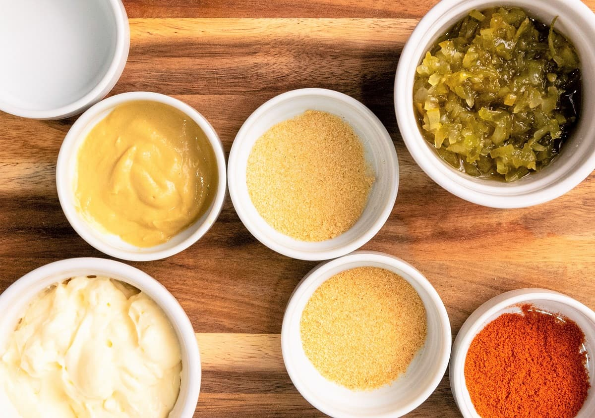
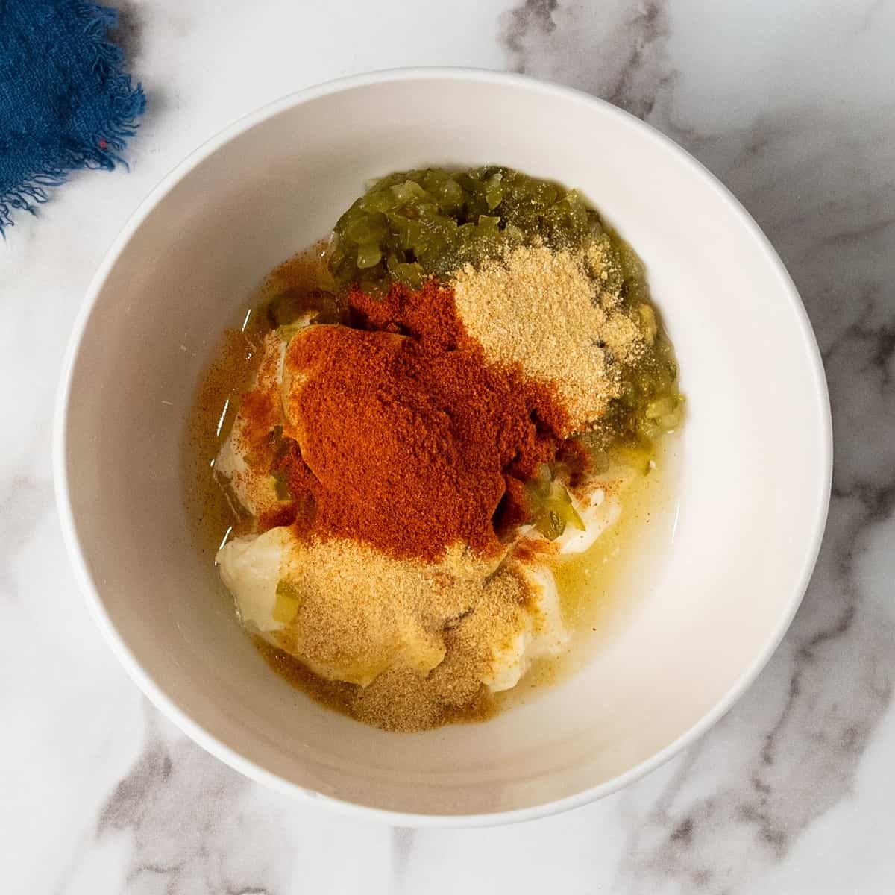
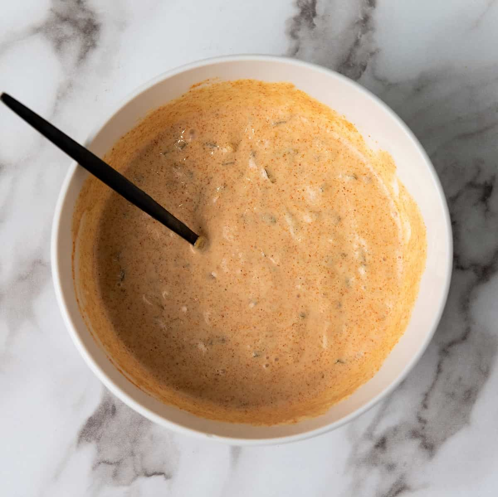

What is Big Mac Sauce?
Big Mac Sauce is a creamy, tangy sauce that is a signature component of the Big Mac burger. It's made with a blend of mayonnaise, pickle relish, and various seasonings.
Ingredients:

- 1/2 cup mayonnaise
- 1 tablespoon sweet pickle relish
- 1 teaspoon white vinegar
- 2 teaspoon yellow mustard
- 1/2 teaspoon onion powder
- 1/2 teaspoon garlic powder
- 1/2 teaspoon paprika
- Salt and pepper to taste
Instructions:

- In a bowl, combine the mayonnaise, sweet pickle relish, white vinegar, yellow mustard, onion powder, garlic powder, and paprika.
- Mix all the ingredients together until well combined.
- Season with salt and pepper to taste.
- Cover the bowl and refrigerate for at least 30 minutes to allow the flavors to meld together.
- Serve the Big Mac Sauce on your favorite burgers or as a dipping sauce for fries!
Enjoy your homemade Big Mac Sauce!

Substitutes / Variations
- For a spicier version, add a dash of hot sauce or a pinch of cayenne pepper to the sauce mixture.
- If you prefer a sweeter sauce, you can add a teaspoon of sugar or honey to the mixture.
- For a healthier option, you can use Greek yogurt instead of mayonnaise.
Storage Instructions
Store the Big Mac Sauce in the refrigerator for up to one week.
Note: The sauce may thicken slightly after refrigeration. If it becomes too thick, you can thin it out with a little bit of water or vinegar before serving.